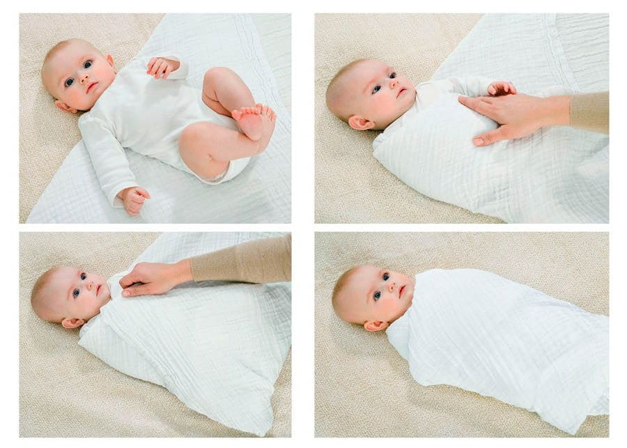

Это одно из простых удовольствий жизни (взрослые уже давно наслаждаются массажем), и исследования показывают, что дети лучше растут и лучше ведут себя от правильных прикосновений.
Детский массаж – это контакт кожа к коже, который помогает родителям и ребенку научиться лучше читать язык тела друг друга – не произнося ни единого слова.
Помимо того факта, что это попросту одно удовольствие – касаться своего ребенка, детский массаж помогает малышам лучше расти и развиваться. В других культурах прикосновение высоко ценится как стимулятор роста детей. В некоторых восточных странах мать обязана делать своему ребенку ежедневный массаж. Одна из наиболее удивительных областей исследований – взаимосвязь между прикосновением и ростом. Дети, к которым прикасаются, растут как на дрожжах, и вот почему.
Прикосновение стимулирует выработку веществ, вызывающих рост. Медики давно знают, что дети, к которым часто прикасаются, растут лучше, и теперь это наблюдение получило научное подтверждение. По всей видимости, имеется биологическая взаимосвязь между поглаживанием, массажем, уходом за детьми и их ростом. Прикосновение стимулирует выработку гормонов роста и повышает уровень энзимов, делающих клетки жизненно важных органов более чувствительными к вызывающему рост действию этих гормонов. К примеру, недоношенные дети в «палате доращивания», где они набирают требуемый вес, показали на 47 процентов больше прибавки в весе, если к ним прикасались чаще.
Исследователи, проводившие испытания на животных, установили взаимосвязь между вылизыванием матерью своего потомства и скоростью роста ее малышей. Когда новорожденные щенки были лишены частого вылизывания (эквивалентного массажу ребенка), уровень гормона роста падал, и рост щенков останавливался. Даже инъекции гормона роста щенкам, не получавшим материнских прикосновений, не вызывали их роста. Лишь когда прикосновения матери и лизание возобновились, щенки стали снова расти.
Исследователи обнаружили, что у человеческих детенышей также, когда их лишили прикосновений, упал уровень гормона роста и развилось заболевание, названное психосоциальной карликовостью; что еще более удивительно, они не росли даже тогда, когда им делали инъекции гормона роста. Лишь под воздействием прикосновений рук эти дети стали расти. Это открытие означает, что благодаря прикосновению на клеточном уровне происходит что-то благоприятное, заставляющее клетки реагировать на гормон роста. Да, есть какая-то магия в родительской ласке.
Прикосновение стимулирует рост мозга. Прикосновение полезно не только для тела – оно полезно и для мозга. Исследования показывают, что новорожденные, которые чаще чувствуют ласку рук, демонстрируют более высокое неврологическое развитие. Откуда такая четкая взаимосвязь? Исследователи считают, что прикосновение стимулирует рост миелина, изолирующего материала, окружающего нервы, благодаря чему нервные импульсы проходят быстрее.
Прикосновение улучшает пищеварение. У детей, к которым чаще прикасаются родители, вырабатывается больше пищеварительных гормонов. Исследователи считают, что это еще одна причина того, что такие дети растут лучше. По всей видимости, прикосновения заставляют пищеварительную систему ребенка работать более эффективно. У детей, мучимых коликами, вызванными синдромом раздраженной толстой кишки, может быть меньше болей в животе, если часто делать им массаж.
Сократите пеленание
Когда-то родителям советовали туго пеленать детей, чтоб они быстрее успокаивались. Новые исследования, однако, показали, что слишком частое пеленание на продолжительное время негативно сказывается на развитии тазобедренных суставов. Для того, чтобы сустав правильно развивался, ребенок должен иметь возможность свободно двигать ножками и проводить как можно больше времени с разведенными в позу лягушонка ножками. Это особенно важно в первые месяцы, когда сустав активно развивается. Если вы пеленаете ребенка лишь на несколько часов в день, никакого вреда это не принесет. Не давайте малышу проспать всю ночь туго спеленатым. Когда он просыпается, распеленывайте его, чтоб он мог вытянуть ножки и свободно подвигать ими.

Прикосновение улучшает поведение. Исследования показывают, что дети, к которым чаще прикасаются, становятся более организованными. Они лучше спят ночью, меньше капризничают днем и лучше включаются во взаимодействие с окружающими. Прикосновение успокаивает малышей. Прикосновение может быть чудесным инструментом, помогающим ребенку уснуть ночью.
Прикосновение повышает самооценку ребенка. Когда ребенок ощущает нежность любящих рук, это помогает ему почувствовать части своего тела, поскольку ребенок узнает, какие участки тела наиболее чувствительны и какие требуют расслабления. Когда до человека дотрагиваются, он чувствует свою важность, точно так же как взрослый чувствует себя «тронутым» словами друга.
Прикосновение помогает родителям. Ежедневный массаж помогает вам стать ближе со своим ребенком, научиться понимать язык его тела и распознавать его сигналы. Каждое прикосновение в нужное время и в нужном месте сближает вас с ребенком.
Массаж особенно ценен для родителя и ребенка, у которых был плохой старт – к примеру, когда они были разлучены вследствие осложнения. Массаж помогает родителю и ребенку снова стать близкими друг другу.
Для матери, которая не испытывает к своему новорожденному естественных материнских чувств, массаж служит еще одной искрой, чтобы разжечь пламя. Точно так же и для тяжелого на подъем ребенка: массаж помогает разрушить барьер, чтобы неласковый ребенок полюбил, когда его берут на руки или гладят, – и чтобы родители привыкли прикасаться к своему ребенку.
Несколько работающих матерей в моей практике используют вечерний массаж как инструмент, помогающий им восстановить контакт с ребенком после дневного отсутствия. Это особое прикосновение дает им возможность настроиться на ребенка и отключиться от работы, когда они переступают порог дома.
Для отцов, впервые столкнувшихся с уходом за новорожденным ребенком, массаж является практическим курсом по общению с ребенком. Кроме того, ребенку важно привыкнуть к отцовскому прикосновению в дополнение к материнскому. Дети лишь выигрывают от разнообразной ласки.
Особые прикосновения для особых детей. Дети-инвалиды – и их родители – получают особую пользу от массажа. Исследования показывают, что массаж помогает детям с нарушениями двигательной, или моторной, функции лучше сообщать о своих потребностях родителям – этот процесс называется подачей коммуникативных сигналов. Массаж позволяет вам научиться лучше воспринимать сигналы тела своего ребенка.
Массаж вы делаете с ребенком, а не ребенку. Это взаимодействие, а не задача, которую нужно выполнить любой ценой. Вы узнаете, какие прикосновения вашему ребенку нравятся, и, как в танце, подчиняетесь языку тела своего ребенка. Хотя практически невозможно гладить своего ребенка неправильно, вот как освоить правильное прикосновение к своему ребенку.
Выберите теплое, тихое место без сквозняков. Наше любимое место – напротив огромного, от пола до потолка, окна, где ребенка греют солнечные лучи. Совершайте этот ритуал где угодно, лишь бы вам и ребенку было удобно: на полу, на столе с мягкой подложкой, на траве, на пляже или на кровати. Включите успокаивающую музыку. Инструкторы по детскому массажу будут хорошим источником информации о подходящей для массажа музыке.
Выберите время, когда вам не придется спешить, когда меньше вероятность, что вас прервут, и когда у ребенка наиболее велика потребность в расслаблении. Одни родители любят начинать день с утреннего массажа. Другие предпочитают делать массаж перед дневным сном. Детей с вечерними коликами лучше всего массировать ранним вечером, прежде чем придет «счастливый час» колик. Иногда выполненный ранним вечером массаж позволяет мучимому коликами ребенку забыть о своей ежевечерней проблеме.
Правильно выберите массажное масло. Детские массажисты и их разборчивая младенческая клиентура предпочитают фруктовые или растительные масла («съедобные масла»), обогащенные витамином Е, не дезодорированные. Ищите на этикетке надпись «холодный отжим» («холодное прессование»), которая означает, что масло было выделено из сырья исключительно за счет давления, без использования высокой температуры или химических растворителей, которые меняют характеристики масла. Избегайте масел, изготовленных на основе нефти. К массажным маслам, выдержавшим испытание временем, относятся кокосовое, миндальное, абрикосовое, сафлоровое и масло авокадо. Посмотрите, не появится ли в течение часа аллергическая реакция в виде высыпаний, особенно при использовании ореховых масел.
Устройте себя и ребенка так, чтобы вам обоим было удобно. Сядьте на пол, прислонившись спиной к дивану или к стене, или встаньте на колени около кровати. В первые месяцы жизни дети любят лежать в естественной колыбели, образованной вашими ногами, когда вы сидите скрестив ноги; или просто вытяните ноги перед собой. Положите ребенка на застланную подгузником овечью шкурку или на подогретое полотенце, положенное поверх ваших ног и образовавшее подобие подушки.
Регулярные сеансы массажа способны помочь вам и вашему ребенку сохранить контакт
Когда ребенок вырастет из колыбели ваших ног, вытягивайте ноги вдоль ребенка. Обязательно держите под рукой лишний подгузник на случай непредвиденного фонтана.
Опытные инструкторы по детскому массажу придают особую важность необходимости уважать желания ребенка. Они советуют, прежде чем прикоснуться к ребенку руками, спросить у него разрешения: «Как насчет массажа?» Дети становятся внимательными к подготовке, т. е. группе событий, сигнализирующих о приближении знакомого события. Когда ребенок видит, как вы втираете в свои ладони масло, и слышит, как вы произносите ключевое слово «массаж», посмотрите, как озаряется его полное одобрения лицо. Если ребенок плачет, лучше отложить массаж и просто подержать его некоторое время на руках или использовать одну из техник успокоения, описанных в Главе 16 «Уход за беспокойным или страдающим коликами ребенком». Помните, что массаж вы делаете с ребенком; если он «не с вами», подождите до лучшего времени. Если он раскапризничается на любом этапе массажа, остановитесь и просто возьмите его на руки. Массаж – это не лейкопластырь, который вы прилепляете ребенку, когда у него болит, а в большей степени процесс, который готовит ребенка (и вас тоже) к тому, чтобы быть в состоянии лучше противостоять жизненным стрессам.
Если ребенок сучит ручками и ножками или он напряжен, начинайте ритуал с техники, которая называется релаксацией посредством прикосновения: перед началом установите с ребенком зрительный контакт. Возьмите извивающиеся или напряженные ножки ребенка и делайте «велосипедик», при этом мягко приговаривая: «Спокойно, спокойно…» Благодаря такому началу ребенок ассоциирует ваши расслабляющие движения с приятным действом, которое последует за ними. Это сигнал, означающий, что сейчас начнется игра. И расслабьтесь сами. Напряженный ребенок не расслабится от прикосновения напряженных рук. Вслушивайтесь в реакцию вашего ребенка, вместо того чтобы превращать массаж в механическую процедуру.
Начинайте с ножек, с которыми работать легче всего и которые ребенок легко позволяет массажировать. Держите ступню одной рукой и «доите» ножку, обхватив ее пальцами: плавно продвигайтесь вверх от лодыжки до бедра другой рукой. Затем возьмите бедро обеими руками, как бейсбольную биту, и легкими поворачивающими и выжимающими движениями (словно выкручиваете белье, но нежно) ведите свои руки от бедра к стопе. Наконец, покатайте ножку между своими ладонями от колена до лодыжки. Продвигаясь вниз по ноге к стопе, выполните серию нажатий большим пальцем руки, обхватившей лодыжку и стопу. В качестве завершающего штриха слегка погладьте ножки от бедра до стопы, прежде чем перейти к туловищу.
Чтобы выполнить массаж живота, скользите открытой ладонью и пальцами, круговыми движениями, держа ладонь на ладони, от грудной клетки вниз. Затем ведите обе ладони вокруг живота по часовой стрелке. Чтобы расслабить напряженный, вздутый животик, попробуйте движение «I Love You» (технику смотрите далее). Наконец, нажимая кончиками пальцев, попробуйте «походить» по всему животику.
Перейдя к груди, ведите обе ладони вдоль грудной клетки от центра к бокам, словно расправляя страницы книги.
Ручки и кисти массируются точно так же, как ножки и ступни, но начинают с «остановки в ямке» (массажа лимфатических узлов в подмышечной впадине).
Для лица имеются совершенно особые приемы: поглаживание раскрытыми ладонями, легкие нажатия и круги большими пальцами и, наконец, легкие похлопывания кончиками пальцев ото лба через щеки.
В конце перейдите к спинке, всеобщей любимице. Подушечками пальцев слегка потрите всю поверхность спины, рисуя маленькие кружки. Затем слегка прочешите кончиками пальцев от спины через ягодицы и ножки до лодыжек.
Есть много других прикосновений, которые вы с вашим ребенком разработаете совместно, учась делать ребенку массаж.
Делать своему ребенку массаж – все равно что читать длинное стихотворение. Если оба вы в настроении послушать все стихотворение целиком, вы начинаете с самого начала и идете строчка за строчкой по порядку (ребенок знает, чего ожидать). Если время поджимает или обстановка не располагает к поэтическим виршам, вы можете зачитать лишь кусок из нескольких любимых строк, которые знаете наизусть. К примеру, если вы уже делали полный массаж ранее в этот день, тогда перед сном можно сохранить красоту целого, сделав массаж одних только рук или спины, с тем чтобы отправить свою кроху в страну грез. Поскольку массаж ассоциируется с расслаблением, у вас в распоряжении чудесный завершающий штрих ритуала подготовки ко сну, который к тому же может быть выполнен отцом.
Марта, Уильям, Роберт, Джеймс Сирс"Ваш малыш от рождения до двух лет"